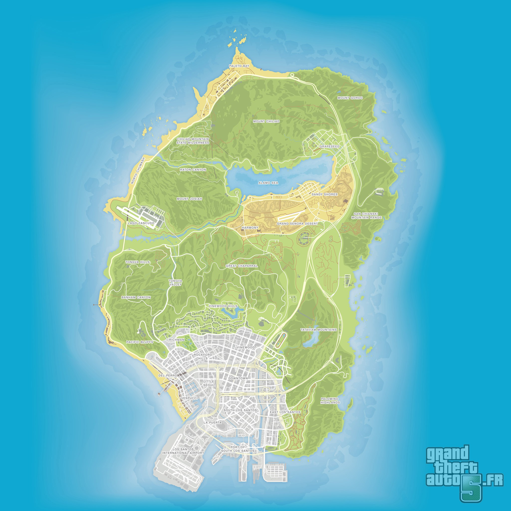

<!DOCTYPE html>
<html lang="fr">
<head>
<meta charset="UTF-8"><meta name="viewport" content="width=device-width, initial-scale=1.0">
<title>Cartographie — The Lost MC</title>
<link rel="stylesheet" href="../css/style.css">
<script src="https://cdn.jsdelivr.net/npm/@supabase/supabase-js@2"></script>
</head>
<body>
<div id="app"></div>
<script src="../js/config.js"></script>
<script src="../js/supabase-client.js"></script>
<script src="../js/auth.js"></script>
<script src="../js/layout.js"></script>
<script>
(async () => {
  const result = await LostMCAuth.guardPage();
  if (!result) return;
  LostMCLayout_render("cartographie", "Cartographie");

  const content = document.getElementById("content");
  content.innerHTML = `
    <div class="panel">
      <div class="panel-title"><h2>Carte du territoire</h2><span class="meta">Clique sur la carte pour ajouter un point</span></div>
      <div class="map-wrap" id="mapWrap">
        
        <div id="markersLayer"></div>
      </div>
      <div class="map-legend" id="legend"></div>
    </div>
  `;

  const mapWrap = document.getElementById("mapWrap");
  const markersLayer = document.getElementById("markersLayer");
  markersLayer.style.position = "absolute";
  markersLayer.style.inset = "0";
  markersLayer.style.pointerEvents = "none";

  let markers = [];

  function renderMarkers() {
    markersLayer.innerHTML = markers.map(m => `
      <div class="map-marker" style="left:${m.x}%; top:${m.y}%; pointer-events:auto;" data-id="${m.id}" title="${(m.label || '').replace(/"/g,'&quot;')} — ${m.author_name || ''}">
        ${m.emoji}
      </div>
    `).join("");

    markersLayer.querySelectorAll(".map-marker").forEach(el => {
      el.onclick = (e) => {
        e.stopPropagation();
        const m = markers.find(x => x.id === el.dataset.id);
        const canDelete = LostMCAuth.isTable() || m.created_by === LostMCAuth.profile.id;
        if (canDelete && confirm(`Supprimer ce point (${m.emoji} ${m.label || ''}) ?`)) {
          sb.from("map_markers").delete().eq("id", m.id);
        } else if (!canDelete) {
          alert(`${m.emoji} ${m.label || 'Sans description'}\nAjouté par ${m.author_name || '?'}`);
        }
      };
    });

    // légende : emojis distincts utilisés
    const seen = {};
    markers.forEach(m => { if (!seen[m.emoji]) seen[m.emoji] = m.label || ""; });
    const legend = document.getElementById("legend");
    const entries = Object.entries(seen);
    legend.innerHTML = entries.length
      ? entries.map(([emoji, label]) => `<div class="entry"><span>${emoji}</span><span>${label || "—"}</span></div>`).join("")
      : `<div class="empty">Aucun point pour le moment — clique sur la carte pour en ajouter un.</div>`;
  }

  async function loadMarkers() {
    const { data } = await sb.from("map_markers").select("*").order("created_at");
    markers = data || [];
    renderMarkers();
  }
  loadMarkers();

  document.getElementById("mapImg").addEventListener("click", (e) => {
    const rect = mapWrap.getBoundingClientRect();
    const x = ((e.clientX - rect.left) / rect.width) * 100;
    const y = ((e.clientY - rect.top) / rect.height) * 100;

    LostMC_editModal("Ajouter un point sur la carte", [
      { key: "emoji", label: "Emoji (ex: 💰 🔫 🏭 🚓)", required: true },
      { key: "label", label: "Description" },
    ], async (values) => {
      const { error } = await sb.from("map_markers").insert({
        x, y,
        emoji: values.emoji,
        label: values.label || null,
        created_by: LostMCAuth.profile.id,
        author_name: LostMCAuth.displayName(),
      });
      if (error) alert(error.message);
    });
  });

  sb.channel("map-realtime").on("postgres_changes", { event: "*", schema: "public", table: "map_markers" }, loadMarkers).subscribe();
})();
</script>
</body>
</html>
